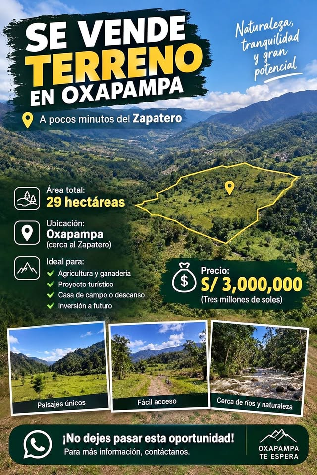

PEN3,000,000

🌱 Cultivos y Ganado Actual Producción Agrícola: Cultivos instalados de naranja (frutales) y maíz (transitorio). Producción Pecuaria: Áreas habilitadas con pastizales aptos para la crianza y alimentación de ganado. Potencial de la Tierra: Suelo de alta versatilidad agrícola, catalogado como apto para todo tipo de cultivo, lo que permite una diversificación inmediata o rotación de productos según el mercado. 📄 Estado de Documentos Estatus actual: Saneado e inscrito en SUNARP. Titularidad: A nombre de una sociedad conyugal (adquirido mediante compraventa en agosto de 2017). Cuenta con ante